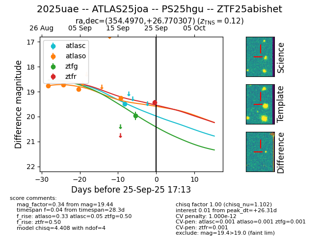
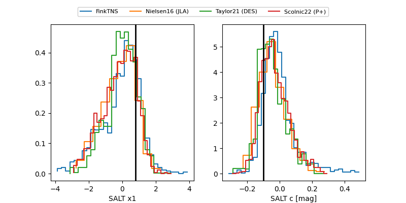

FINK: ZTF25abishet
Lasair: ZTF25abishet
ALeRCE: ZTF25abishet
TNS: 2025uae
YSE: 2025uae
ZTF25abishet (ztf,fink)
2025uae (tns,yse)
ATLAS25joa (atlas)
PS25hgu (panstarrs)
equatorial (ra, dec) = (354.4970,+26.77031)
galactic (l, b) = (103.2714,-33.28183)


last atlasc=19.50, atlaso=19.25, ztfg=19.97, ztfr=19.44
2 atlasc, 4 atlaso, 1 ztfg, 1 ztfr detections